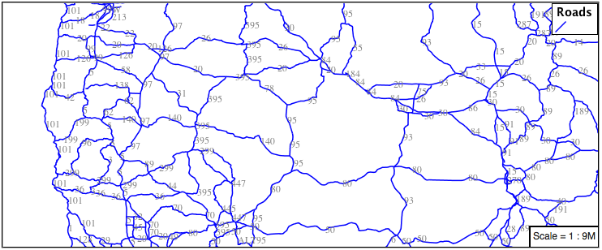
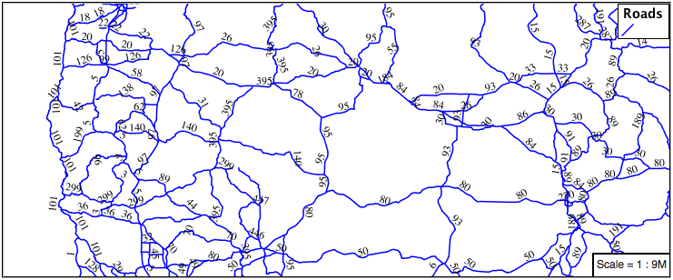

3.2. Lines¶
We will start our tour of CSS styling by looking at the representation of lines.

LineString Geometry¶
Review of line symbology:
Lines are used to represent physical details that are too small to be represented at the current scale. Line work can also be used to model non-physical ideas such as network connectivity, or the boundary between land-use classifications. The visual width of lines do not change depending on scale.
Lines are recording as LineStrings or Curves depending on the geometry model used.
SLD uses a LineSymbolizer record how the shape of a line is drawn. The primary characteristic documented is the Stroke used to draw each segment between vertices.
Labeling of line work is anchored to the mid-point of the line. GeoServer provides an option to allow label rotation aligned with line segments.
For our exercises we are going to be using simple CSS documents, often consisting of a single rule, in order to focus on the properties used for line symbology.
Each exercise makes use of the ne:roads layer.
Reference:
Line Symbology (User Manual | CSS Property Listing)
Lines (User Manual | CSS Cookbook)
LineString (User Manual | SLD Reference )
3.2.1. Stroke¶
The only mandatory property for representation of linework is stroke. This is a key property; its presence triggers the generation of an appropriate LineSymbolizer.
Basic Stroke Properties¶
The use of stroke as a key property prevents CSS from having the idea of a default line color (as the stroke information must be supplied each time).
Navigate to the CSS Styles page.
Click Choose a different layer and select ne:roads from the list.
Click Create a new style and choose the following:
Workspace for new layer:
No workspace
New style name:
line_example
Replace the generated CSS definition with the following stroke example:
/* @title Line * @abstract Example line symbolization */ * { stroke: blue; }
Click Submit and then the Map tab for an initial preview.
You can use this tab to follow along as the style is edited, it will refresh each time Submit is pressed.

You can look at the SLD tab at any time to see the generated SLD. Currently it is showing a straight forward LineSymbolizer generated from the CSS stroke property:
<sld:UserStyle> <sld:Name>Default Styler</sld:Name> <sld:FeatureTypeStyle> <sld:Name>name</sld:Name> <sld:Rule> <sld:Title>Line</sld:Title> <sld:Abstract>Example line symboloization</sld:Abstract> <sld:LineSymbolizer> <sld:Stroke> <sld:CssParameter name="stroke">#0000ff</sld:CssParameter> </sld:Stroke> </sld:LineSymbolizer> </sld:Rule> </sld:FeatureTypeStyle> </sld:UserStyle>
Additional properties cane be used fine-tune appearance. Use stroke-width to specify the width of the line.
/* @title Line * @abstract Example line symbolization */ * { stroke: blue; stroke-width: 2px; }
The stroke-dasharray is used to define breaks rendering the line as a dot dash pattern.
/* @title Line * @abstract Example line symbolization */ * { stroke: blue; stroke-width: 2px; stroke-dasharray: 5 2; }
Check the Map tab to preview the result.

Note
The GeoServer rendering engine is quite sophisticated and allows the use of units of measure (such as m or ft). While we are using pixels in this example, real world units will be converted using the current scale.
3.2.2. Z-Index¶
The next exercise shows how to work around a limitation when using multiple strokes to render a line.
Use of Z-Index¶
Providing two strokes is often used to provide a contrasting edge (called casing) to thick line work.
Update
line_examplewith the following:* { stroke: black, #8080E6; stroke-width: 5px, 3px; }
If you look carefully you can see a problem with our initial attempt. The junctions of each line show that the casing outlines each line individually, making the lines appear randomly overlapped. Ideally we would like to control this process, only making use of this effect for overpasses.
The z-index parameter allows a draw order to be supplied. This time all the thick black lines are dawn first (at z-index 0) followed by the thinner blue lines (at z-index 1).
* { stroke: black, #8080E6; stroke-width: 5px, 3px; z-index: 0, 1; }
If you look carefully you can see the difference.

By using z-index we have been able to simulate line casing.

3.2.3. Label¶
Our next example is significant as it introduces the how text labels are generated.
Use of Label Property¶
This is also our first example making use of a dynamic style (where the value of a property is defined by an attribute from your data).
To enable LineString labeling we will need to use the key properties for both stroke and label.
Update
line_examplewith the following:* { stroke: blue; label: [name]; }
The SLD standard documents the default label position for each kind of Geometry. For LineStrings the initial label is positioned on the midway point of the line.
We have used an expression to calculate a property value for label. The label property is generated dynamically from the name attribute. Expressions are supplied within square brackets, making use of Constraint Query Language (CQL) syntax.
* { stroke: blue; label: [name]; }
Additional properties can be supplied to fine-tune label presentation:
* { stroke: blue; label: [name]; font-fill: black; label-offset: 7px; }
The font-fill property is set to black provides the label color.
* { stroke: blue; label: [name]; font-fill: black; label-offset: 7px; }
The label-offset property is used to adjust the starting position used for labeling.
Normally the displacement offset is supplied using two numbers (allowing an x and y offset from the the midway point used for LineString labeling).
When labeling a LineString there is a special twist: by specifying a single number for label-offset we can ask the rendering engine to position our label a set distance away from the LineString.
* { stroke: blue; label: [name]; font-fill: black; label-offset: 7px; }
When used in this manner the rotation of the label will be adjusted automatically to match the LineString.

3.2.4. How Labeling Works¶
The rendering engine collects all the generated labels during the rendering of each layer. Then, during labeling, the engine sorts through the labels performing collision avoidance (to prevent labels overlapping). Finally the rendering engine draws the labels on top of the map. Even with collision avoidance you can spot areas where labels are so closely spaced that the result is hard to read.
To take greater control over the GeoServer rendering engine we can use extra parameters.
The ability to take control of the labeling process is exactly the kind of hint a extra parameter is intended for.
Update
line_examplewith the following:* { stroke: blue; label: [name]; font-fill: black; label-offset: 7px; label-padding: 10; }
The parameter label-padding provides additional space around our label for use in collision avoidance.
* { stroke: blue; label: [name]; font-fill: black; label-offset: 7px; label-padding: 10; }
Each label is now separated from its neighbor, improving legibility.

3.2.5. Scale¶
This section explores the use of attribute selectors and the @scale selector together to simplify the road dataset for display.
Replace the line_example CSS definition with:
[scalerank < 4] { stroke: black; }
And use the Map tab to preview the result.

The scalerank attribute is provided by the Natural Earth dataset to allow control of the level of detail based on scale. Our selector short-listed all content with scalerank 4 or lower, providing a nice quick preview when we are zoomed out.
In addition to testing feature attributes, selectors can also be used to check the state of the rendering engine.
Replace your CSS with the following:
[@scale > 35000000] { stroke: black; } [@scale < 35000000] { stroke: blue; }
As you adjust the scale in the Map preview (using the mouse scroll wheel) the color will change between black and blue. You can read the current scale in the bottom right corner, and the legend will change to reflect the current style.

Putting these two ideas together allows control of level detail based on scale:
[@scale < 9000000] [scalerank > 7] { stroke: #888888; } [@scale < 17000000] [scalerank = 7] { stroke: #777777; } [@scale < 35000000] [scalerank = 6] { stroke: #444444; } [@scale > 9000000] [@scale < 70000000] [scalerank = 5] { stroke: #000055; } [@scale < 9000000] [scalerank = 5] { stroke: #000055; stroke-width: 2 } [@scale > 35000000] [scalerank < 4] { stroke: black; } [@scale > 9000000] [@scale <= 35000000] [scalerank < 4] { stroke: black; stroke-width: 2 } [@scale <= 9000000] [scalerank < 4] { stroke: black; stroke-width: 4 }
As shown above selectors can be combined in the same rule:
Selectors separated by blank-space are combined CQL Filter AND
Selectors separated by a comma are combined using CQL Filter OR
Our first rule [@scale < 9000000] [scalerank > 7] checks that the scale is less than 9M AND scalerank is greater than 7.

3.2.6. Bonus¶
Finished early? Here are some opportunities to explore what we have learned, and extra challenges requiring creativity and research.
In a classroom setting please divide the challenges between teams (this allows us to work through all the material in the time available).
3.2.6.1. Explore Follow Line Option¶
Options can be used to enable some quite useful effects, while still providing a style that can be used by other applications.
Update line_example with the following:
* { stroke: #ededff; stroke-width: 10; label: [level] " " [name]; font-fill: black; label-follow-line: true; }
The property stroke-width has been used to make our line thicker in order to provide a backdrop for our label.
* { stroke: #ededff; stroke-width: 10; label: [level] " " [name]; font-fill: black; label-follow-line: true; }
The label property combines combine several CQL expressions together for a longer label.
* { stroke: #ededff; stroke-width: 10; label: [level] " " [name]; font-fill: black; label-follow-line: true; }
The combined label property:
[level] " " [name]
Is internally represented with the Concatenate function:
[Concatenate(level,' #', name)]
The property label-follow-line provides the ability of have a label exactly follow a LineString character by character.
* { stroke: #ededff; stroke-width: 10; label: [level] " " [name]; font-fill: black; label-follow-line: true; }
The result is a new appearance for our roads.

3.2.6.2. Challenge SLD Generation¶
Generate the SLD for the following CSS.
* { stroke: black; }
What is unusual about the SLD code for this example?
Challenge: What is unusual about the generated SLD? Can you explain why it still works as expected?
Note
Answer provided at the end of the workbook.
3.2.6.3. Challenge Classification¶
The roads type attribute provides classification information.
You can Layer Preview to inspect features to determine available values for type.
Challenge: Create a new style adjust road appearance based on type.

Hint: The available values are ‘Major Highway’,’Secondary Highway’,’Road’ and ‘Unknown’.
Note
Answer provided at the end of the workbook.
3.2.6.4. Challenge SLD Z-Index Generation¶
Review the SLD generated by the z-index example.
* { stroke: black, #8080E6; stroke-width: 5px, 3px; z-index: 0, 1; }
Challenge: There is an interesting trick in the generated SLD, can you explain how it works?
Note
Answer provided at the end of the workbook.